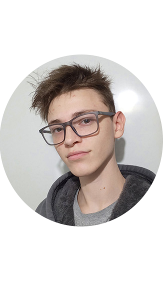

Martín Segnini
Jr Web Developer

Soy Martín Segnini, tengo 20 años actualmente, vivo en Rosario y soy Programador. Anteriormente trabajé como Técnico y Administrador de Redes algunos meses a mis 18 años. Me gusta trabajar en grupos donde pueda aprender de mis compañeros y también ellos de mí. Busco un buen ambiente laboral que me permita crecer dentro de la empresa. Me considero una persona proactiva y capaz de adaptarse rápidamente a los cambios que puedan surgir en el camino a nuestro objetivo.